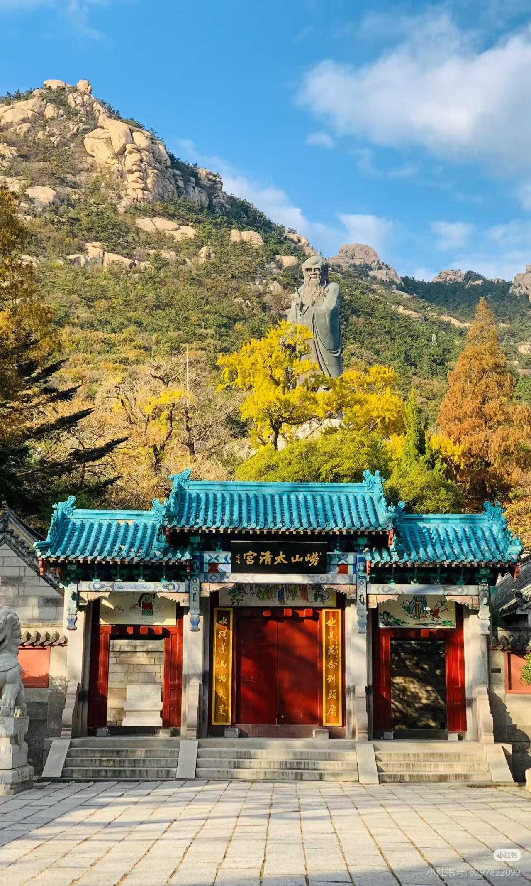

崂山，古称劳山、牢山，位于山东省青岛市东部，耸立于黄海之滨，主峰巨峰海拔1132.7米，是中国海岸线上的第一高峰，享有"海上名山第一"的美誉。崂山山海相连，山光海色，正是"山不在高，有仙则名"的写照。
崂山是道教发祥地之一。自春秋战国时期，便有方士在此修炼。到了宋代，崂山道教日趋兴盛，被誉为"道教全真天下第二丛林"。丘处机、张三丰等道教名士都曾在此修道传教，留下了众多传说与遗迹。
"泰山虽云高，不如东海崂。"
—— 古语崂山不仅是道教圣地，也是佛教文化的重要传播地。山中寺庙道观林立，华严寺、太清宫、上清宫等古刹名观星罗棋布，佛道共存，形成了独特的宗教文化景观。蒲松龄笔下的《崂山道士》更是让崂山名扬天下。

太清宫 — 崂山历史最悠久的道观